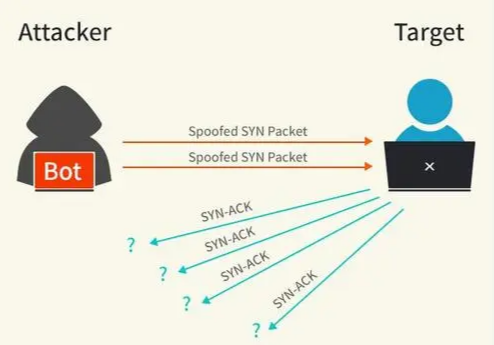
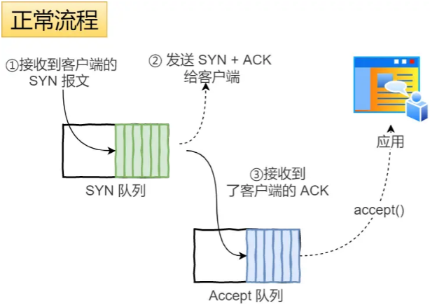
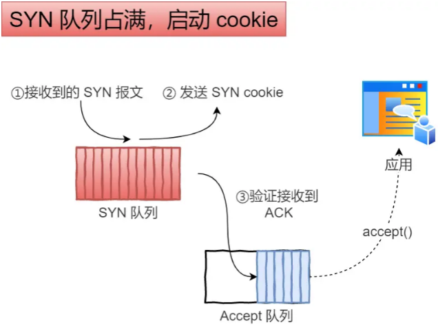

首页 > 编程笔记
SYN攻击是什么？如何避免？
们都知道 TCP 连接建立是需要三次握手，假设攻击者短时间伪造不同 IP 地址的 SYN 报文，服务端每接收到一个 SYN 报文，就进入SYN_RCVD 状态，但服务端发送出去的 ACK + SYN 报文，无法得到未知 IP 主机的 ACK 应答，久而久之就会占满服务端的半连接队列，使得服务端不能为正常用户服务。
先跟大家说一下，什么是 TCP 半连接和全连接队列。
在 TCP 三次握手的时候，Linux 内核会维护两个队列，分别是：
我们先来看下 Linux 内核的 SYN 队列（半连接队列）与 Accpet 队列（全连接队列）是如何工作的？
正常流程：
不管是半连接队列还是全连接队列，都有最大长度限制，超过限制时，默认情况都会丢弃报文。
避免 SYN 攻击方式，可以有以下四种方法：
net.core.netdev_max_backlog = 10000
具体过程：
可以看到，当开启了 tcp_syncookies 了，即使受到 SYN 攻击而导致 SYN 队列满时，也能保证正常的连接成功建立。
net.ipv4.tcp_syncookies 参数主要有以下三个值：
那么在应对 SYN 攻击时，只需要设置为 1 即可。
那么针对 SYN 攻击的场景，我们可以减少 SYN-ACK 的重传次数，以加快处于 SYN_REVC 状态的 TCP 连接断开。
SYN-ACK 报文的最大重传次数由 tcp_synack_retries内核参数决定（默认值是 5 次），比如将 tcp_synack_retries 减少到 2 次：

先跟大家说一下，什么是 TCP 半连接和全连接队列。
在 TCP 三次握手的时候，Linux 内核会维护两个队列，分别是：
- 半连接队列，也称 SYN 队列；
- 全连接队列，也称 accept 队列。
我们先来看下 Linux 内核的 SYN 队列（半连接队列）与 Accpet 队列（全连接队列）是如何工作的？

正常流程：
- 当服务端接收到客户端的 SYN 报文时，会创建一个半连接的对象，然后将其加入到内核的「 SYN 队列」；
- 接着发送 SYN + ACK 给客户端，等待客户端回应 ACK 报文；
- 服务端接收到 ACK 报文后，从「 SYN 队列」取出一个半连接对象，然后创建一个新的连接对象放入到「 Accept 队列」；
- 应用通过调用 accpet() socket 接口，从「 Accept 队列」取出连接对象。
不管是半连接队列还是全连接队列，都有最大长度限制，超过限制时，默认情况都会丢弃报文。
如何避免 SYN 攻击？
SYN 攻击方式最直接的表现就会把 TCP 半连接队列打满，这样当 TCP 半连接队列满了，后续再在收到 SYN 报文就会丢弃，导致客户端无法和服务端建立连接。避免 SYN 攻击方式，可以有以下四种方法：
- 调大 netdev_max_backlog；
- 增大 TCP 半连接队列；
- 开启 tcp_syncookies；
- 减少 SYN+ACK 重传次数。
1) 调大 netdev_max_backlog
当网卡接收数据包的速度大于内核处理的速度时，会有一个队列保存这些数据包。控制该队列的最大值如下参数，默认值是 1000，我们要适当调大该参数的值，比如设置为 10000：net.core.netdev_max_backlog = 10000
2) 增大 TCP 半连接队列
增大 TCP 半连接队列，要同时增大下面这三个参数：- 增大 net.ipv4.tcp_max_syn_backlog
- 增大 listen() 函数中的 backlog
- 增大 net.core.somaxconn
3) 开启 net.ipv4.tcp_syncookies
开启 syncookies 功能就可以在不使用 SYN 半连接队列的情况下成功建立连接，相当于绕过了 SYN 半连接来建立连接。

具体过程：
- 当 「 SYN 队列」满之后，后续服务端收到 SYN 包，不会丢弃，而是根据算法，计算出一个 cookie 值；
- 将 cookie 值放到第二次握手报文的「序列号」里，然后服务端回第二次握手给客户端；
- 服务端接收到客户端的应答报文时，服务端会检查这个 ACK 包的合法性。如果合法，将该连接对象放入到「 Accept 队列」。
- 最后应用程序通过调用 accpet() 接口，从「 Accept 队列」取出的连接。
可以看到，当开启了 tcp_syncookies 了，即使受到 SYN 攻击而导致 SYN 队列满时，也能保证正常的连接成功建立。
net.ipv4.tcp_syncookies 参数主要有以下三个值：
- 0 值，表示关闭该功能；
- 1 值，表示仅当 SYN 半连接队列放不下时，再启用它；
- 2 值，表示无条件开启功能。
那么在应对 SYN 攻击时，只需要设置为 1 即可。
$ echo 1 > /proc/sys/net/ipv4/tcp_syncookies
4) 减少 SYN+ACK 重传次数
当服务端受到 SYN 攻击时，就会有大量处于 SYN_REVC 状态的 TCP 连接，处于这个状态的 TCP 会重传 SYN+ACK ，当重传超过次数达到上限后，就会断开连接。那么针对 SYN 攻击的场景，我们可以减少 SYN-ACK 的重传次数，以加快处于 SYN_REVC 状态的 TCP 连接断开。
SYN-ACK 报文的最大重传次数由 tcp_synack_retries内核参数决定（默认值是 5 次），比如将 tcp_synack_retries 减少到 2 次：
$ echo 2 > /proc/sys/net/ipv4/tcp_synack_retries
关注公众号「站长严长生」，在手机上阅读所有教程，随时随地都能学习。内含一款搜索神器，免费下载全网书籍和视频。

微信扫码关注公众号